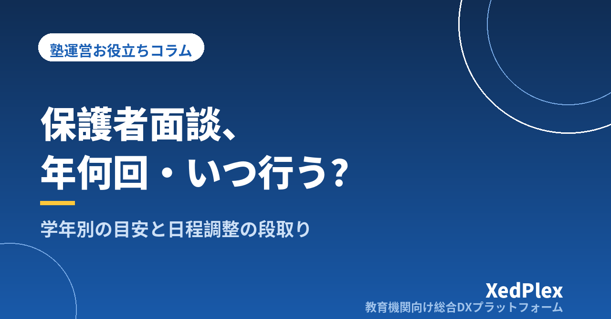

塾の保護者面談は年何回・いつ行う？｜学年別の目安と案内・日程調整の段取り

「保護者面談は年に何回やればいいのか」「前回から少し空いてしまったけれど、今から声をかけていいものか」。個人塾の塾長から、よく聞く迷いです。大手塾のように決まった面談週間があるわけではなく、授業と事務を回しながら、気づいたときに声をかける。そんな運用になっている塾も少なくありません。
面談が不定期になると、保護者からは「最近どうなっているのか分からない」と見え、塾長は「話す材料がそろっていない」と感じたまま当日を迎えがちです。この記事では、面談の回数と時期をあらかじめ決めておく考え方と、学年別の目安、案内から日程調整までの段取りを、個人塾・小規模塾向けに整理します。
面談の回数・時期が決まっていない塾で起きること
面談の予定が決まっていないと、次のようなことが起きやすくなります。
- 面談が「問題が起きたとき」だけになる：成績が下がった、欠席が続いたなど、悪い知らせのときに呼ばれる場になり、保護者が身構えてしまいます。
- 保護者ごとに頻度がばらつく：よく話しかけてくれる保護者とは話す機会が多く、忙しい家庭とは半年以上話していない。気づいたときには退塾の申し出、ということもあります。
- 準備が毎回ゼロからになる：次の面談がいつか決まっていないので、日々の記録を面談に向けてためておく意識が持てません。
- 講習や受験の案内が後手に回る：季節講習や志望校の相談は、面談で直接伝えると話が早く進みます。面談の時期がずれると、案内だけが先に届いてしまいます。
どれも塾長の努力不足というより、面談を年間の予定として組み込んでいないことから起きています。先に「いつ・誰と」を決めておけば、声をかけるタイミングに迷う時間もなくなります。
基本は「年3回の定期面談＋必要なときの随時面談」
回数に正解はありませんが、小規模塾で無理なく続けやすいのは、全員と年3回の定期面談を行い、必要に応じて随時面談を足す形です。年3回なら、学校の学期や塾の季節講習の区切りに合わせやすく、1回あたりの準備も現実的な量に収まります。
| 時期の目安 | 面談の主なテーマ | あわせて伝えやすいこと |
|---|---|---|
| 4〜6月（新年度） | 新学年のスタート状況、1年間の目標の共有 | 定期テストへの取り組み方、夏の予定の見通し |
| 7月前後（夏期講習の前） | 1学期の振り返り、夏に取り組む内容 | 夏期講習の内容と申込の案内 |
| 11〜12月（冬期講習の前） | 2学期の振り返り、次の学年・受験に向けた準備 | 冬期講習・新年度のコースの案内 |
ポイントは、面談を講習の申込締切より前に置くことです。面談で学習状況を共有したうえで講習の内容を説明すると、保護者は「なぜ必要か」を理解したうえで判断できます。講習の申込や締切の決め方は塾の夏期講習・季節講習の申込・請求管理を混乱させないコツでまとめています。
学年・状況別の面談回数の目安
年3回を土台に、学年や状況によって回数を足したり、時期をずらしたりします。目安は次のとおりです。
| 対象 | 回数の目安 | 時期・内容の調整 |
|---|---|---|
| 小学生 | 年2〜3回 | 学習習慣・塾での様子が中心。短めの面談や、電話・オンラインでも可 |
| 中1・中2、高1・高2 | 年3回 | 定期テストの結果が出た後に置くと、話の材料がそろいやすい |
| 受験学年（中3・高3など） | 年4〜5回 | 志望校の検討、出願前、直前期などに追加。受験の節目ごとに置く |
| 入塾したばかりの生徒 | 入塾1〜2か月後に1回追加 | 通い始めの様子と、最初の目標の確認 |
受験学年は、志望校の決定や出願といった節目が多く、定期面談だけでは足りなくなりがちです。出願スケジュールと面談の置き方は受験期の保護者との情報共有、塾はどう進める？で詳しく紹介しています。
随時面談を設ける基準を決めておく
定期面談の間にも、早めに話したほうがいい場面があります。「気になったら」ではなく、基準を先に決めておくと声をかけやすくなります。
- 欠席や遅刻が続いている（例：同じ月に2〜3回以上など、塾ごとに決める）
- 定期テストの結果が、本人・保護者の期待と大きく離れている
- 宿題や授業中の様子に、はっきりした変化がある
- 保護者から相談や要望が届いた
- コース変更・休塾・退塾の申し出があった
随時面談は、悪い知らせを伝える場にしないことが大切です。事実→塾の見立て→次の一手の順で話すと、保護者も落ち着いて聞けます。成績が伸びないときの伝え方は塾で成績がすぐに伸びないとき、保護者にどう説明する？も参考にしてください。
案内から日程調整までの段取り
面談の時期が決まったら、案内と日程調整を毎回同じ流れで進めます。面談週間の約1か月前から動き始めると余裕が持てます。
| 時期 | やること |
|---|---|
| 4週間前 | 面談期間と1枠の長さ（20〜30分など）を決め、候補日時の枠を作る |
| 3週間前 | 保護者へ案内を一斉送信する（面談の目的・期間・申込方法・締切） |
| 2週間前 | 申込締切。未回答の家庭に個別に声をかける |
| 1週間前 | 日時の確定を連絡し、準備資料を作り始める |
| 前日 | リマインドを送る（日時・場所・オンラインの場合は接続方法） |
案内文の例
いつもありがとうございます。○月○日〜○月○日に、保護者面談を行います。1学期の学習の様子と、夏休みの取り組みについてお話しする機会です（1回20分程度・教室またはオンライン）。
ご希望の日時を、○月○日までに下記の方法でお知らせください。ご都合が合わない場合も、お気軽にご相談ください。
案内では、全員に行う定期面談であることをはっきり書きます。「何か問題があったのでは」と心配させないためです。日程調整は、候補枠を先に示して選んでもらう形にすると、個別のやりとりが減ります。保護者連絡全体の頻度とのバランスは塾の保護者連絡、適切な頻度は？で整理しています。
枠の組み方のコツ
- 平日の授業前後と、土曜の日中など、違う時間帯を混ぜて枠を用意する
- きょうだいで通っている家庭は、続けて2枠を押さえられるようにする
- 枠と枠の間に5〜10分の余白を入れ、記録の時間にあてる
- オンラインや電話も選べるようにすると、共働きの家庭も参加しやすい
面談を「やりっぱなし」にしない記録と年間予定への組み込み
面談で決めたことは、次の面談までの約束です。終わった直後に、次の3点を生徒ごとの記録に残しておきましょう。
- 話した内容：現状の共有、保護者からの質問や要望
- 決めたこと：家庭と塾それぞれが取り組むこと、講習やコースの方針
- 次に確認すること：いつ、何を見て振り返るか
この記録と日々の指導記録がそろっていれば、次の面談の準備は「前回の約束がどうなったか」を確かめるところから始められます。資料を短時間でまとめる方法は保護者面談の準備を1時間で終わらせる方法で、日々の記録の残し方は保護者に伝わる塾の指導報告書の書き方で紹介しています。
あわせて、面談の時期を年間の事務予定に最初から書き込んでおくと、毎年同じ時期に迷わず動けます。講習・請求・新年度準備と並べて1枚にまとめる方法は塾の年間事務カレンダーの作り方をご覧ください。面談を実施した生徒・まだの生徒が一覧で分かるようにしておくと、話す機会がない家庭を作らずに済みます。
まとめ
保護者面談の回数と時期は、全員と年3回（新年度・夏前・冬前）を基本に、受験学年や入塾直後は回数を足し、随時面談は基準を決めて行う形にすると、小規模塾でも無理なく続けられます。案内は約1か月前から同じ段取りで進め、面談後は「話したこと・決めたこと・次に確認すること」を記録して次回につなげます。
面談が定期的にあると、保護者にとっては「いつでも相談できる塾」になり、塾長にとっては日々の記録を活かす場になります。まずは次の講習の前に、面談期間を1つカレンダーに入れるところから始めてみてください。
この記事を書いた運営より
私たちは、個人経営・小規模の学習塾向けに、生徒管理・QRコードでの入退室記録・月次請求・保護者へのLINE/メール通知・AIによる学習支援までをひとつにまとめた教育機関向け総合DXプラットフォーム「XedPlex（ゼドプレックス）」を開発・提供しています。初期費用は0円、料金は生徒1名あたり月額300円（税込）から。生徒50名の塾なら月15,000円（税込）です。全国8つの教室で導入されており、導入塾には紹介ホームページの無料作成も行っています。機能の詳細説明はこちら。
XedPlexの詳細を見る